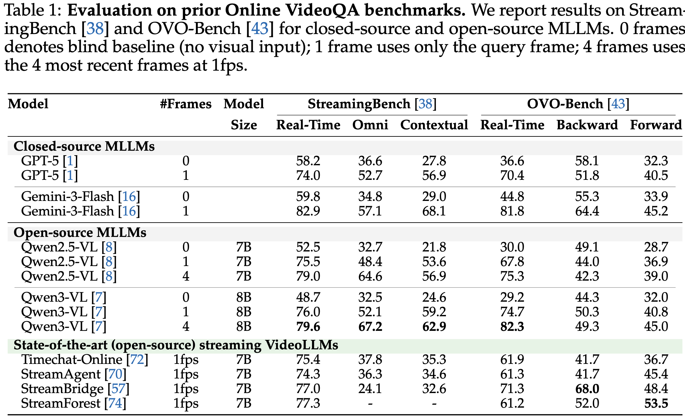

I could not extract the exact paragraph text from SPOT_Bench_arxiv.pdf in this environment, so this section is ready for you to replace with the final paper paragraph verbatim.
SPOT_Bench_arxiv.pdf
